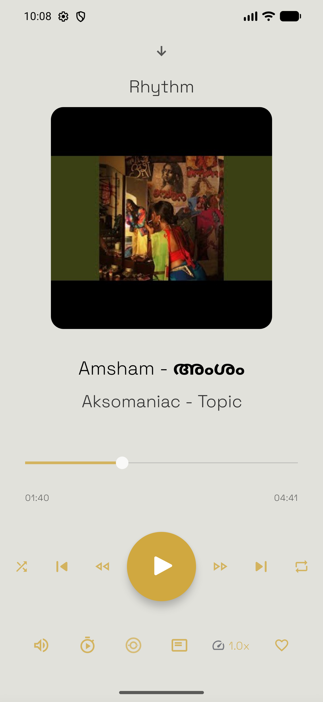
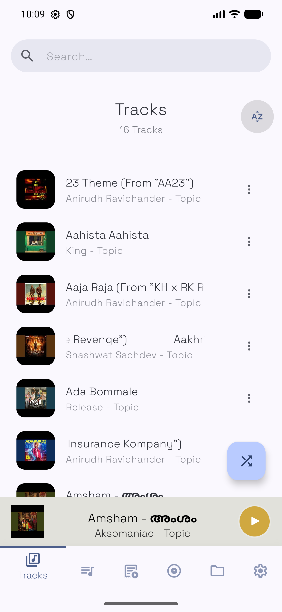
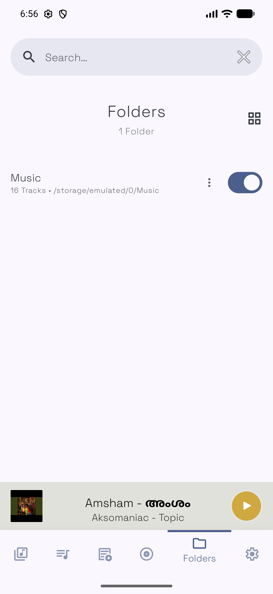
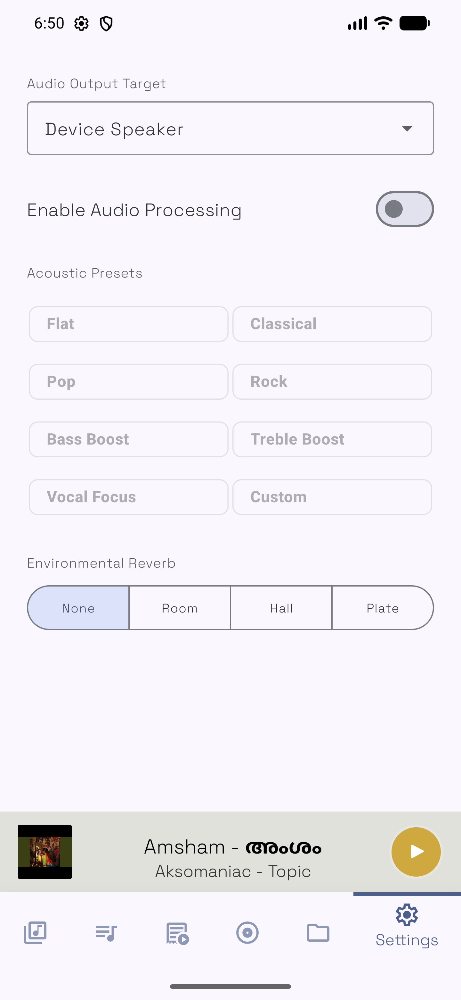
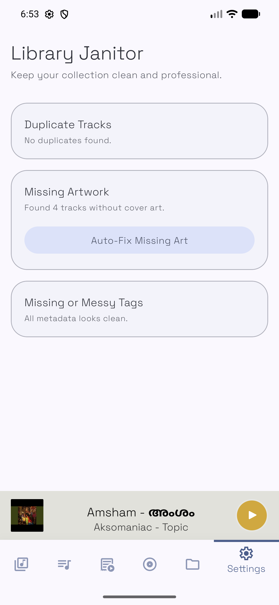
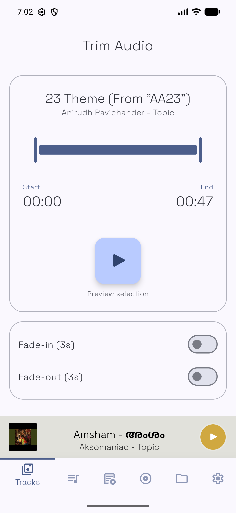
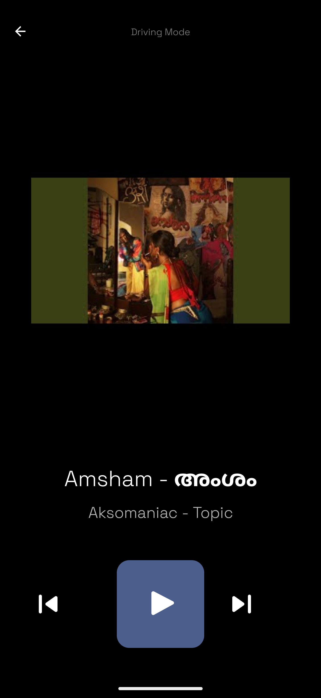

Experience studio-grade audio with dynamic Material You theming that adapts to your album art. 100% open-source, ad-free, and offline.

Every feature in Myusiq is engineered for high performance, local library health, and total control.
The interface extracts dynamic color swatches from your active album art, transforming backgrounds, buttons, and animations live.
Precision audio shaping with custom frequency sliders, bass boost, and visual frequency response curves.
Detect missing artwork, repair corrupted track metadata, group multi-artist albums, and clear cached lyrics with side-by-side review choices.
Unknown Artist • Missing Artwork
High-contrast, large-touch controls engineered for safe, distraction-free playback while on the road.
Control playback, adjust volume, and view dynamic artwork directly from your smartwatch.
No ads, no analytics, no cloud requirements. Your local music library stays strictly private on your device.
Click any screenshot to view full resolution.






Track the latest user features, design updates, and audio enhancements.
Download the APK directly or build from source on GitHub.
Compatible with Android 8.0 (API 26) and above. Includes phone and Wear OS APKs.
Myusiq-v1.1.0.apk file to your Android device.